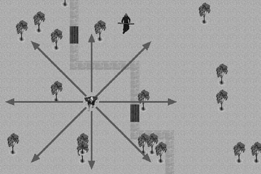
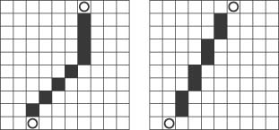
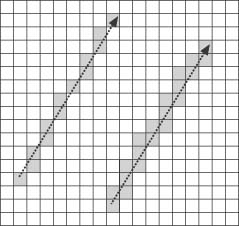
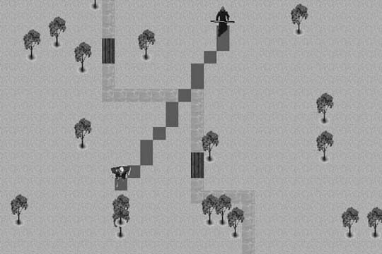

|
|
< Day Day Up > |
|
2.3 Line-of-Sight Chasing in Tiled EnvironmentsAs we stated earlier, the environment in a tile-based game is divided into discrete tiles. This places certain limitations on movement that don't necessarily apply in a continuous environment. In a continuous environment, positions usually are represented using floating-point variables. Those positions are then mapped to the nearest screen pixel. When changing positions in a continuous environment, you don't always have to limit movement to adjacent screen pixels. Screen pixels typically are small enough so that a small number of them can be skipped between each screen redraw without sacrificing motion fluidity. In tile-based games, however, changing positions is more restrictive. By its very nature, tile-based movement can appear jaggy because each tile is not mapped to a screen pixel. To minimize the jaggy and sometimes jumpy appearance in tile-based games, it's important to move only to adjacent tiles when changing positions. For games that use square tiles, such as the example game, this offers only eight possible directions of movement. This limitation leads to an interesting problem when a predator, such as the troll in the example, is chasing its target. The troll is limited to only eight possible directions, but mathematically speaking, none of those directions can accurately represent the true direction of the target. This dilemma is illustrated in Figure 2-3. Figure 2-3. Tile-based eight-way movementAs you can see in Figure 2-3, none of the eight possible directions leads directly to the target. What we need is a way to determine which of the eight adjacent tiles to move to so that the troll appears to be moving toward the player in a straight line. As we showed you earlier, you can use the simple chasing algorithm to make the troll relentlessly chase the player. It will even calculate the shortest possible path to the player. So, what's the disadvantage? One concerns aesthetics. When viewed in a tile-based environment, the simple chase method doesn't always appear to produce a visually straight line. Figure 2-4 illustrates this point. Figure 2-4. Simple chase versus line-of-sight chaseAnother reason to avoid the simple chase method is that it can have undesirable side effects when a group of predators, such as a pack of angry trolls, are converging on the player. Using the simple method, they would all walk diagonally to the nearest axis of their target and then walk along that axis to the target. This could lead to them walking single file to launch their attack. A more sophisticated approach is to have them walk directly toward the target from different directions. It's interesting to note that both paths shown in Figure 2-4 are the same distance. The line-of-sight method, however, appears more natural and direct, which in turn makes the troll seem more intelligent. So, the objective for the line-of-sight approach is to calculate a path so that the troll appears to be walking in a straight line toward the player. The approach we'll take to solve this problem involves using a standard line algorithm that is typically used to draw lines in a pixel environment. We're essentially going to treat the tile-based environment as though each tile was in fact a giant screen pixel. However, instead of coloring the pixels to draw a line on the screen, the line algorithm is going to tell us which tiles the troll should follow so that it will walk in a straight line to its target. Although you can calculate the points of a line in several ways, in this example we're going to use Bresenham's line algorithm. Bresenham's algorithm is one of the more efficient methods for drawing a line in a pixel-based environment, but that's not the only reason it's useful for pathfinding calculations. Bresenham's algorithm also is attractive because unlike some other line-drawing algorithms, it will never draw two adjacent pixels along a line's shortest axis. For our pathfinding needs, this means the troll will walk along the shortest possible path between the starting and ending points. Figure 2-5 shows how Bresenham's algorithm, on the left, might compare to other line algorithms that can sometimes draw multiple pixels along the shortest axis. If an algorithm that generated a line such as the one shown on the right is used, the troll would take unnecessary steps. It still would still reach its target, but not in the shortest and most efficient way. Figure 2-5. Bresenham versus alternate line algorithmAs Figure 2-5 shows, a standard algorithm such as the one shown on the right would mark every tile for pathfinding that mathematically intersected the line between the starting and ending points. This is not desirable for a pathfinding application because it won't generate the shortest possible path. In this case, Bresenham's algorithm produces a much more desirable result. The Bresenham algorithm used to calculate the direction of the troll's movement takes the starting point, which is the row and column of the troll's position, and the ending point, which is the row and column of the player's position, and calculates a series of steps the troll will have to take so that it will walk in a straight line to the player. Keep in mind that this function needs to be called each time the troll's target, in this case the player, changes position. Once the target moves, the precalculated path becomes obsolete, and therefore it becomes necessary to calculate it again. Examples 2-4 through 2-7 show how you can use the Bresenham algorithm to build a path to the troll's target. Example 2-4. BuildPathToTarget function
void ai_Entity::BuildPathToTarget (void)
{
int nextCol=col;
int nextRow=row;
int deltaRow=endRow-row;
int deltaCol=endCol-col;
int stepCol, stepRow;
int currentStep, fraction;
As Example 2-4 shows, this function uses values stored in the ai_Entity class to establish the starting and ending points for the path. The values in col and row are the starting points of the path. In the case of the sample program, col and row contain the current position of the troll. The values in endRow and endCol contain the position of the troll's desired location, which in this case is the player's position. Example 2-5. Path initialization
for (currentStep=0;currentStep<kMaxPathLength; currentStep++)
{
pathRow[currentStep]=-1;
pathCol[currentStep]=-1;
}
currentStep=0;
pathRowTarget=endRow;
pathColTarget=endCol;
In Example 2-5 you can see the row and column path arrays being initialized. This function is called each time the player's position changes, so it's necessary to clear the old path before the new one is calculated. Upon this function's exit, the two arrays, pathRow and pathCol, will contain the row and column positions along each point in the troll's path to its target. Updating the troll's position then becomes a simple matter of traversing these arrays and assigning their values to the troll's row and column variables each time the troll is ready to take another step. Had this been an actual line-drawing function, the points stored in the path arrays would be the coordinates of the pixels that make up the line. The code in Example 2-6 determines the direction of the path by using the previously calculated deltaRow and deltaCol values. Example 2-6. Path direction calculation
if (deltaRow < 0) stepRow=-1; else stepRow=1;
if (deltaCol < 0) stepCol=-1; else stepCol=1;
deltaRow=abs(deltaRow*2);
deltaCol=abs(deltaCol*2);
pathRow[currentStep]=nextRow;
pathCol[currentStep]=nextCol;
currentStep++;
It also sets the first values in the path arrays, which in this case is the row and column position of the troll. Example 2-7 shows the meat of the Bresenham algorithm. Example 2-7. Bresenham algorithm
if (deltaCol >deltaRow)
{
fraction = deltaRow *2-deltaCol;
while (nextCol != endCol)
{
if (fraction >=0)
{
nextRow =nextRow +stepRow;
fraction =fraction -deltaCol;
}
nextCol=nextCol+stepCol;
fraction=fraction +deltaRow;
pathRow[currentStep]=nextRow;
pathCol[currentStep]=nextCol;
currentStep++;
}
}
else
{
fraction =deltaCol *2-deltaRow;
while (nextRow !=endRow)
{
if (fraction >=0)
{
nextCol=nextCol+stepCol;
fraction=fraction -deltaRow;
}
nextRow =nextRow +stepRow;
fraction=fraction +deltaCol;
pathRow[currentStep]=nextRow;
pathCol[currentStep]=nextCol;
currentStep++;
}
}
}
The initial if conditional uses the values in deltaCol and deltaRow to determine which axis is the longest. The first block of code after the if statement will be executed if the column axis is the longest. The else part will be executed if the row axis is the longest. The algorithm will then traverse the longest axis, calculating each point of the line along the way. Figure 2-6 shows an example of the path the troll would follow using the Bresenham line-of-sight algorithm. In this case, the row axis is the longest, so the else part of the main if conditional would be executed. Figure 2-6. Bresenham tile-based chaseFigure 2-6 shows the troll's path, but of course this function doesn't actually draw the path. Instead of drawing the line points, this function stores each row and column coordinate in the pathRow and pathCol arrays. These stored values are then used by an outside function to guide the troll along a path that leads to the player. |
|
|
< Day Day Up > |
|